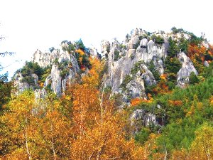
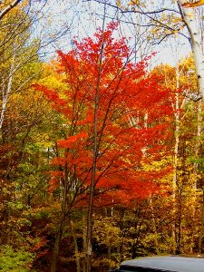
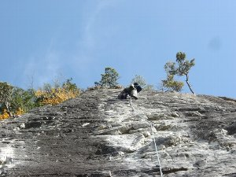

秋 小川山（廻り目平キャンプ場） | ２００３年１０月 |
|---|---|
| ハッキリ言って、ここの岩場は私の手の皮に合わず苦手である（去年の秋に、この事実が発覚）。 この為、この一年ずっと避けてきましたが、紅葉が良いこの時期についに行ってしまいました。 ですので、登る事は二の次で、紅葉鑑賞と夜の宴会が目的です。 《紅葉》 写真の通り、最高の時期でした。昨日行った上高地よりも全然良いって、私の知り合いが感動していました。 | |
|  |  |
| 《クライミング》 予想通り成果は散々でしたが、楽しかった。 ○小川山ストーリー（５．９）って、恐エーね。壁はねているし、ランナウトしているし。被っていれば、足ブラで登れそうなグレードなんだけどね。 ○ロング・ロング・アゴー（５．１０ｂ）☆☆☆ ：みんなでアップ ６０ｍロープだったら、ロワーダウン可能 ○チキチキバンバン（５．１１ｂ）☆ ：ＲＹＵＵ ×（付録：頭に擦り傷） マーシー × きっかー × ○ちゃわんむし（５．１１ａ）☆☆ ：ＲＹＵＵ × マーシー × きっかー ＲＰ（３回目） ○小川山ストーリー（５．９）☆☆☆ ：みんなでアップ 午前中は日が当たらず寒いです。 ○クラックジョイ（５．８） みんなで遊ぶ。 ○弟岩上の（５．１１ｂ） きっかー つまらなかったので、途中でやめる。 ○スィール（３級）☆☆ ＲＹＵＵ × きっかー × | |
|  |  |
| 《夕食》 とにかくキノコ鍋（味噌味）・・・美味過ぎ☆☆☆。 クリタケ、シメジ、ナメコ 全て天然もんですから＋ ハマグリ、海老、タラ、厚揚げ。（この村、唯一のスーパー「ナナーズ」にて販売）。これだけの素材が入ったら美味いのは当たり前かも？味噌は小分けのだし入り味噌なんだけどね。 てな訳で、今回はクライマーばかりで行って来ましたが、次回はいろんな人種で出掛けましょう。良いところですぞ。 | |
|  |  |
| コメント＆写真 ｂｙ キッカー | |